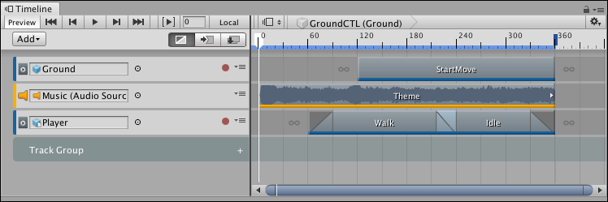
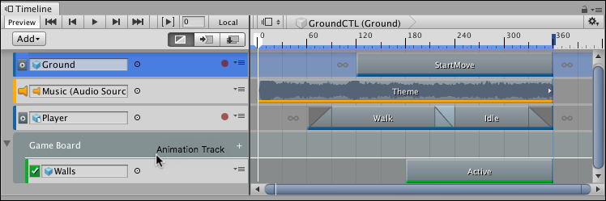
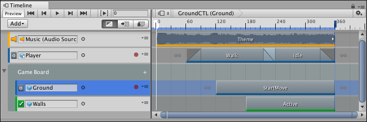
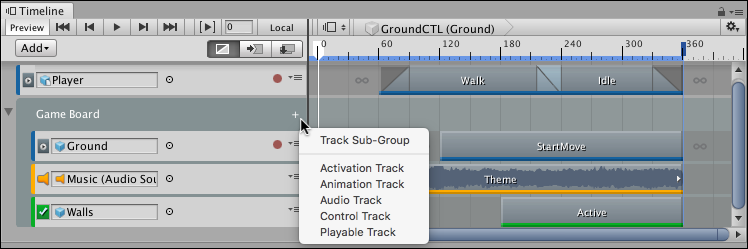

Using Track groups¶
Use Track groups to organize tracks when you are working with many tracks. For example, a Timeline Asset contains an Animation track and an Audio track that interacts with the same GameObject. To organize these tracks, move them into their own Track group.
To add a Track group, click the Add button and select Track Group from the Add menu. You can also right-click an empty area of the Track list and select Track Group from the context menu. A new Track group appears at the bottom of the Track list.

Timeline window with Track group added
To rename a Track group, click its name and an I-beam cursor appears. Type the new name for the Track group and press Return.
To move tracks into a Track group, select one or more tracks and drag over the Track group. The Track group is highlighted. When dragging a selection of tracks, the last selected track type displays beside the cursor. To drop the tracks before a specific track in the Track group, drag until a white insert line indicates the destination.

Release the mouse button when the white insert line appears within the Track group

Selected tracks are moved to the location of the insert line
A Track group can also have any number of Track sub-groups. To add a Track sub-group, either select a Track group and click the Add button in the Track list, or click the Plus icon beside the Track group name, and select Track Sub-Group. You can also use this menu to add tracks directly to a Track group or a Track sub-group.

Click the Plus icon to add Track Sub-Groups and tracks to Track groups